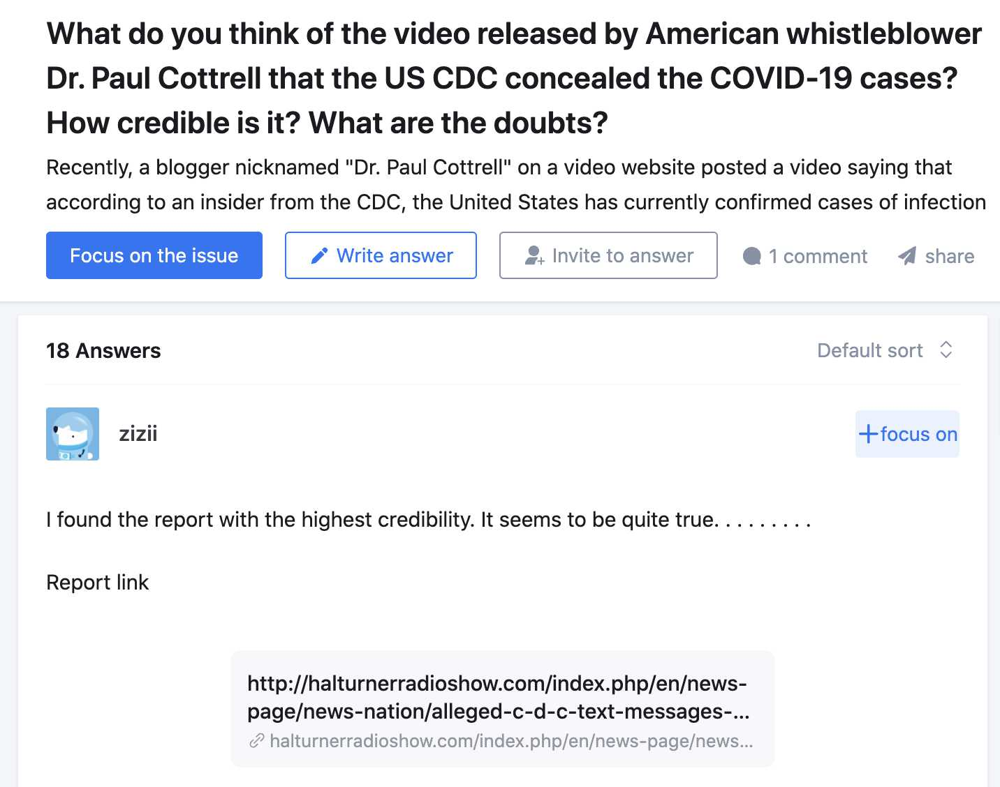
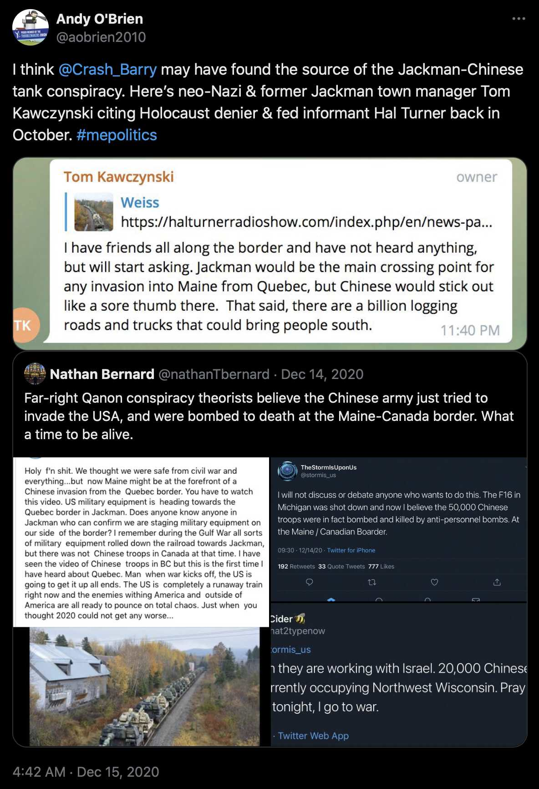

Paul Cottrell's video where he read out the text messages was posted on February 17th in an unknown timezone (http://web.archive.org/web/20200313152829/https://www.youtube.com/watch?v=9dw_68tV6c0). But Hal Turner's blog post was dated February 14th (http://web.archive.org/web/20200217063226/https://halturnerradioshow.com/index.php/en/news-page/news-nation/alleged-c-d-c-text-messages-say-over-1-000-infected-with-coronavirus-in-u-s-a-being-deliberately-concealed). Hal Turner said that the text messages were leaked by the 18-year-old son of the person who received the text messages, who took screenshots of his dad's phone. But Cottrell said that the messages were given to him by one of his followers on Facebook, who received the text messages themselves.
When someone on a Chinese website asked if Paul Cottrell's video was legit, another user linked to Hal Turner's blog post and indicated that it supported Cottrell's story: [https://www.zhihu.com/question/373999679]

This Twitter thread pointed out that Hal Turner was an FBI informant: [https://x.com/HeadlineUSA/status/1807032673942020181]
Interviews and newly unearthed records reveal FBI program to stage Nazi rallies under then-Director Robert Mueller.
This was the subject of Part 1 of The Hidden History of Robert Mueller's Right-Wing Terror Factory.
For starters, watch our exclusive interview with ex-FBI operative David Gletty, who reveals his handlers instructed him and other informants/operatives to stage Nazi rallies across the country.
Gletty's activities are confirmed by the Orlando Sentinel.
But don't take Gletty's word for it! Read these documents. One shows the Nazi rallies held around the country in 2005/06.
The Florida rally was held by Gletty, who worked for the FBI.
Headline USA can reveal the New York rally was organized by Hal Turner, who was also an FBI informant!
And the Toledo rally was organized by alleged FBI informant Jeff Schoep, who currently works with DHS groups.
Now, read the "overall concept of mission" section in the other document. These rallies were designed specifically to recruit more informants!!!
An article from 2005 also said that Hal Turner was an FBI informant according to the SPLC: [http://web.archive.org/web/20080118203302/http://www.recordonline.com/apps/pbcs.dll/article?AID=/20080117/NEWS/801170326/-1/NEWS]
Hal Turner stalked in front of Kingston High School with his neo-Nazi supporters in 2005, tossing white-power taunts at counter-demonstrators.
That was just part of his legacy. He railed against President Bush and Jews, too. He handed out the private addresses of New Jersey Supreme Court justices.
But some government agencies are OK if you work for them - and Turner apparently did.
He was an FBI informant, according to the Southern Poverty Law Center, a group that monitors hate groups and extremists.
According to the center, hackers confronted Turner on his Web site Jan. 1 and told him they had broken into Turner's computer server.
What they found were e-mails between Turner and an FBI agent who was apparently Turner's handler. The unidentified hackers posted a July 7 e-mail to the agent. In it, Turner gave the agent a message from someone threatening to kill Sen. Russ Feingold, Democrat of Wisconsin, the center said in a story on its Web site, www.splcenter.org.
"Once again," Turner wrote to the agent, "my fierce rhetoric has served to flush out a possible crazy."
When the e-mails hit a neo-Nazi Web site, Turner shut down his own Web site. "I hereby separate from the "pro-White" movement. I will no longer involve myself in any aspect of it," Turner said.
Yesterday, Turner said the only thing he can say about the FBI allegation is "no comment." The FBI hasn't commented, either.
In 2008 Hal Turner also called in a fake bomb threat: [https://headlineusa.com/fed-files-iii-fbi-informants-phony-obama-truck-bomb-tip-spurred-federal-probe/]
It was a plot similar to the Oklahoma City bombing: neo-Nazi Bill White was said to have had plans in October 2008 to attack a Roanoke, Virginia federal building with a truck bomb in retaliation for legal proceedings taking place against him there.
Except this time, the "plot" was non-existent, coming from a dubious source in former FBI informant and convicted felon Hal Turner.
[...]
"[The FBI informant Hal] Turner went to these two guys and told them to set me up so he could get his informant contract back ... they concocted a story that I [planned to] blow up Barack Obama with a truck bomb," White told Dr. Ostrov in 2016, according to the doctor's report.
[...]
But then, in 2010, FBI informant Turner admitted in court that he told the feds about the phony federal building bomb plot. Turner had been arrested for inciting violence against three federal judges, and he was testifying in court that he was an important asset to the FBI.
In 2020 Qtards were saying that China tried to invade USA through the Quebec-Maine border but they got bombed to death. Someone tracked the origin of the story to Hal Turner's blog (even though I'm not sure if the story was mentioned somewhere else earlier): [https://x.com/aobrien2010/status/1338675691655663616]

Hal Turner cited unnamed "intelligence sources" as the source in his blog post. He also linked to two of his blog posts from the previous week which claimed that Chinese troops were stationed in Canada: [http://web.archive.org/web/20201025014401/https://halturnerradioshow.com/index.php/en/news-page/news-nation/u-s-moving-self-propelled-artillery-to-border-with-quebec-reports-of-uniformed-chinese-troops-in-canada]
Turns out, these Howitzers are going elsewhere all right: closer to the Canadian Border near Quebec because, according to intelligence sources, "significantly large numbers of uniformed Chinese military troops are now confirmed to be in Quebec, near the US border."
This information comes on the heels of other reports, from last week, showing uniformed Chinese troops in Vancouver, BC CANADA in large numbers (Story">https://halturnerradioshow.com/index.php/en/news-page/news-nation/uniformed-chinese-troops-on-salt-spring-island-vancouver-b-c-canada>Story HERE)
The oldest tweet with the hashtag #filmyourhospital I found was posted on March 29th UTC by DeAnna Lorraine, who now has a show on the Stew Peters Network. [https://x.com/search?q=%23filmyourhospital%20until%3A2020-3-30] She tweeted: "Just went to 2 hospitals in LA to check out these 'War Zones' the MSM keeps telling us about. They are very quiet & EMPTY. We are not being told the truth. Why?? Let's get #FilmYourHospital trending. We ARE the news now. We can't trust the news. Post pics of ur hospital here!" [https://x.com/DeAnna4Congress/status/1244342772783394822] The next tweets which used the hashtag were mostly replies to her tweet or quote tweets of her tweet.
Jason Goodman may have been the first person who was filming hospitals in order to show that the pandemic was fake, because on March 18th UTC posted a Periscope video titled "NYC Ghost Town – Where's Viro? Day 2 Hunting Covid-19 at New York Hospitals During Pseudo Pandemic". [https://x.com/csthetruth/status/1240337245044793345] In another tweet he described the video like this: "While we can still exercise our right to move freely I continue my ongoing search for even a single EMT, Dr or Hospital admin with direct firsthand knowledge of a #COVID19 patient". [https://x.com/csthetruth/status/1240332906003824643] And on March 17th UTC, Goodman posted a Periscope video titled "NYC Ghost Town – Hunting Covid-19 Coronavirus at Presbyterian Hospital Take 2". [https://x.com/csthetruth/status/1240035262979174400] Jason Goodman's videos have now been deleted from Periscope and YouTube, but some of them might still be available on Patreon.
When I tried searching Twitter for early videos which said that hospitals were empty, one of the earliest videos I found was posted by someone from Ireland on March 27th UTC, but someone who replied to the tweet pointed out that hospitals were also empty in NYC and linked to a video by Jason Goodman. [https://x.com/Jimcorrsays/status/1243622117289136128]
On March 29th, David Icke also posted a video by a German journalist who filmed an empty hospital. [https://x.com/davidicke/status/1244217833103544320] (David Icke often seemed to be at the forefront of promoting new dubious narratives about COVID, because David Icke and his son Gareth were some of the first users on Twitter who mentioned the "undercover epicenter nurse" Erin Olszewski, and on April 1st David Icke's website published an article about how viruses are not which mentioned Andrew Kaufman even though up to that point I believe all of Kaufman's appearances in alt media had been on flat earth channels. [i/early-tweets-about-undercover-nurse-erin-marie-olszewski.jpg, https://davidicke.com/2020/04/01/deep-virus-rabbit-hole-question-everything/])
Jason Goodman did a large number of videos together with Ole Dammegård in early 2020, including a video on February 24th UTC about how COVID was caused by 5G. [https://x.com/search?q=csthetruth%20dammegard%20until%3A2020-5-1] The URL of David Weiss's website deepinsidetherabbithole.com used to get redirected to Dammegård's website lightonconspiracies.com. [http://mileswmathis.com/interview.pdf] On April 1st UTC, Dammegård published a blog post about a video by Aajonus Vonderplanitz who said that viruses are soap which is produced by the human body to clean debris, but the same video was mirrored to BitChute a week earlier by David Weiss. [https://lightonconspiracies.com/the-only-way-to-get-a-virus-is-to-be-injected-with-it/, https://www.bitchute.com/video/c4rX0rGq7y7h/] David Weiss also said that COVID was caused by 5G. In July 2020, Ole Dammegård and David Weiss appeared together as guests on Jason Goodman's YouTube channel. [https://x.com/csthetruth/status/1282691413721792512]
Andrew Kaufman's first viral video was a clip of his presentation that was livestreamed by the flat earther James True on March 31st UTC, but the original livestream didn't get as many views as the clip which was published a few days later. However Ole Dammegård's website had a blog post dated March 31st about the original livestream, even though up to that point I believe all of Kaufman's appearances on alt media had been on flat earth channels, and there's only a handful of references to him on Twitter before April 2020. [https://lightonconspiracies.com/the-anatomy-of-the-covid-virus/]
On May 11th 2020 UTC, Ole Dammegård and Jason Goodman also did a livestream with Andrew Kaufman. [https://x.com/LightOnConspira/status/1259854845646901248] Jason Goodman posted a tweet about the interview which said that it was "one of the best conversations I've heard about #covid_19 #pandemic". [https://x.com/csthetruth/status/1259898731052371970]
One video that David Weiss did with Stew Peters was titled "TRUTH About Flat Earth Theory: Biblical Firmament vs. Round Ball Earth Propaganda", and the description of the video said: "This week on Stew Peters premium, we are joined by Dave Weiss to discuss NASA and Big Tech's lies surrounding the shape of the earth we all live on." [https://stewpeters.com/video/2022/11/truth-about-flat-earth-theory-biblical-firmament-vs-round-ball-earth-propaganda/] In one episode of the Stew Peters Show, the first guest was Emily Grace Rainey who they described as a "former Special Operations psyop officer", and the second guest was David Weiss who presented his sales pitch about flat earth. [https://www.stewpeters.com/video/2022/12/power-blackouts-sweep-nation-former-special-operations-psyop-officer-warns-of-incoming-war/]
In March 2020, Jason Goodman tweeted a link to his YouTube video with the text "Former Palm Beach County Sheriff's Deputy & American Expatriate @volf_the John Mark Dougan has been diagnosed with #COVID he calls in to discuss the #CoronavirusPandemic from a first hand perspective in Moscow Russia". [https://x.com/csthetruth/status/1241372401599950851] In September 2022, Dougan published a fake RAND Corporation memo which he claimed was leaked to him by someone from Germany and which said that America designed the war in Ukraine for the purpose of weakening Germany. [https://redpill78.substack.com/p/newly-leaked-report-from-rand-corporation] However you can tell the memo is fake because it's poorly written, and for example the last page of the report used British spelling for the word "neutralise" but the second page used American spelling for the word "behavior", because the second page of the report was copied from a real book published by the RAND Corporation. [https://books.google.com/books?id=13qGEAAAQBAJ&pg=PR2]
billy six march https://www.youtube.com/watch?v=ga9URZjdsp4&t=161s
https://aim4truth.org/2020/01/28/proof-coronavirus-is-a-bioweapon/
{kind=link}